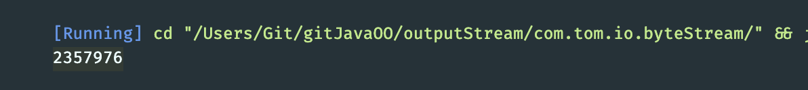
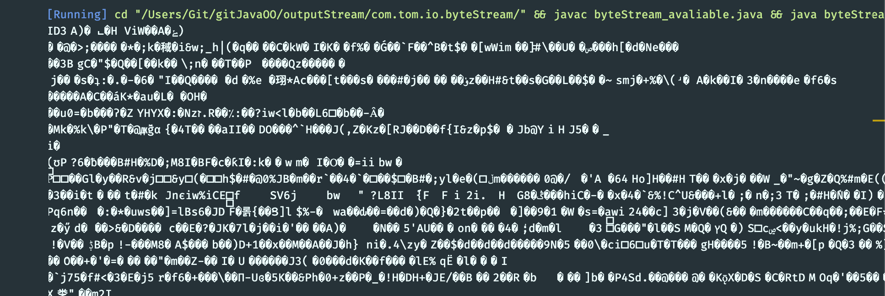
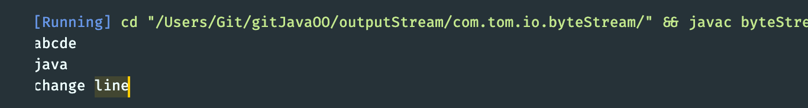
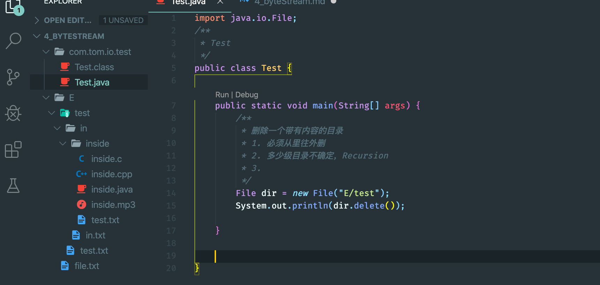
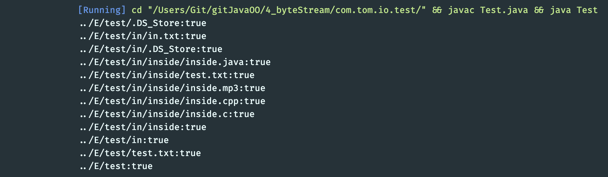
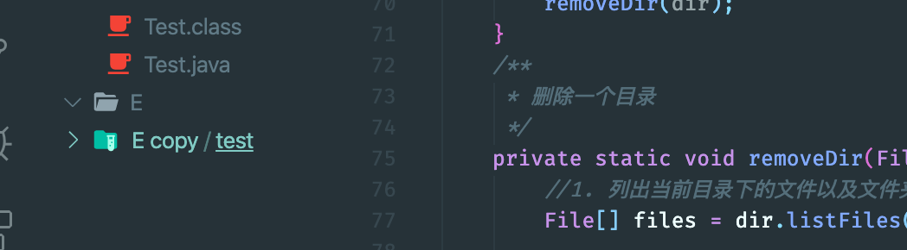
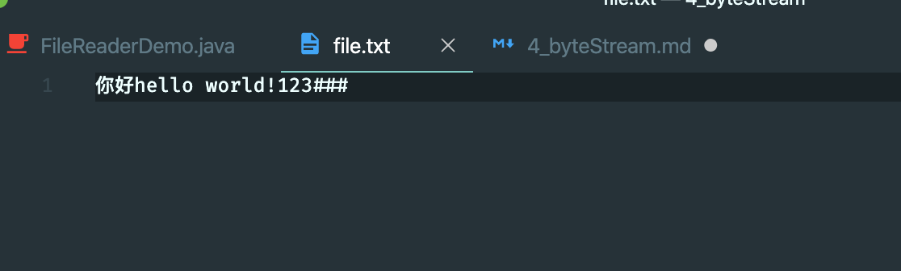
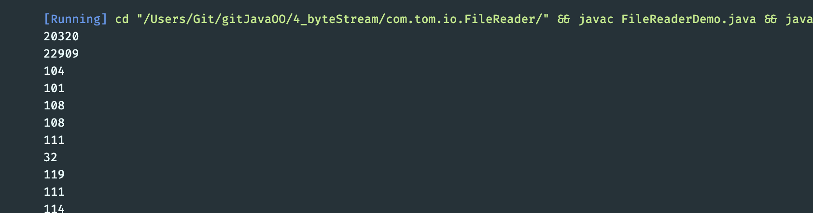
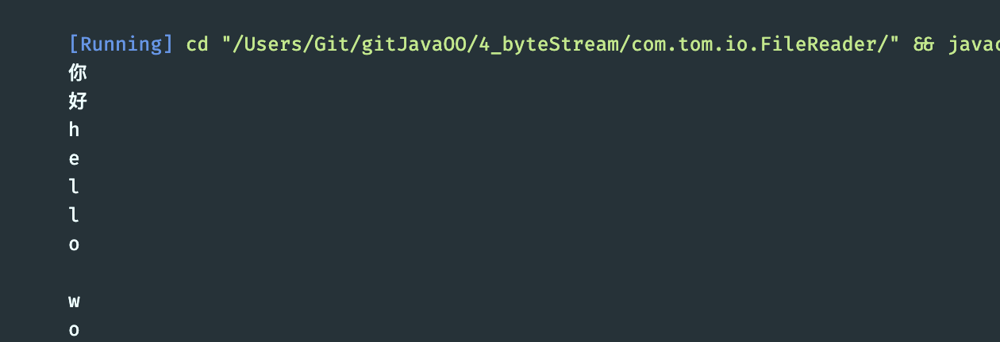

4. byte Stream
available()
- Returns an estimate of the number of remaining bytes that can be read
import java.io.FileInputStream;
import java.io.IOException;
/**
* byteStream_avaliable
*/
public class byteStream_avaliable {
public static void main(String[] args) throws IOException {
/**
* available()
*/
FileInputStream fis = new FileInputStream("../tempfile/1.mp3");
//Returns an estimate of the number of remaining bytes that can be read
System.out.println(fis.available());
fis.close();
}
}

public static void main(String[] args) throws IOException {
/**
* available()
*/
FileInputStream fis = new FileInputStream("../tempfile/1.mp3");
//Returns an estimate of the number of remaining bytes that can be read
// System.out.println(fis.available());
byte[] buf = new byte[fis.available()]; //定义了一个刚刚好的数组. 注意：如果文件过大，容易溢出
//建议缓冲区长度还是1024 整数倍
String str = new String(buf);
System.out.println(str);
fis.close();
}

FileInputStream fis = new FileInputStream("../tempfile/file.txt");

删除一个带有内容的目录
- first create some files for testing:

- 主要思路： 是目录就递归，不是全删除
import java.io.File;
/**
* Test
*/
public class Test {
public static void main(String[] args) {
/**
* 删除一个带有内容的目录
* 1. 必须从里往外删
* 2. 多少级目录不确定，Recursion
* 3.
*/
File dir = new File("../E/test");
// System.out.println(dir.delete());
removeDir(dir);
}
/**
* 删除一个目录
*/
private static void removeDir(File dir) {
//1. 列出当前目录下的文件以及文件夹file[]
File[] files = dir.listFiles();
for(File file: files){
//2. 对遍历的对象进行判断是否是目录
if(file.isDirectory()){
removeDir(file);
}else{
System.out.println(file + ":"+file.delete());
}
}
System.out.println(dir+":"+dir.delete());
}
}


charstream 字符流
FileReader
- 第一种方法：
import java.io.FileReader;
import java.io.IOException;
/**
* FileReaderDemo
*
* java.io.Reader: 字符输入流，是字符输入流的最顶层的superclass, 定义了一些共性的成员方法，是一个抽象类
*
* 共性的成员方法：
* int read() ，读取单个字符并返回
* int read(char[] chuf) 一次读取多个字符，将字符读入数组
* void close() 关闭
*
* java.io.FileReader extends InputStreamReader extends Reader
* FileReader: 文件字符输入流
* 作用：把硬盘文件中的数据以字符的方式读取到内存中
*
* constructor:
* FileReader(String filename)
* FileReader(File file)
* param: 读取文件的数据源
* String filename: 文件路径
* File file: 一个文件
* FileReader constructor的作用：
* 1. 创建一个FileReader object
* 2. 会把FileReader对象指向要读取的文件
*
* 字符输入流的使用步骤：
* 1. create FileReader object, constructor方法中绑定要读取的数据源
* 2. 使用filereader object中的方法read()读取文件
* 3. close（）
*/
public class FileReaderDemo {
public static void main(String[] args) throws IOException {
//create FileReader object,
FileReader fr = new FileReader("../tempfile/file.txt");
int len = 0;
while((len = fr.read()) != -1){
System.out.println(len);
}
fr.close();
}
}
 
- update
public static void main(String[] args) throws IOException {
//create FileReader object,
FileReader fr = new FileReader("../tempfile/file.txt");
int len = 0;
while((len = fr.read()) != -1){
System.out.println((char)len);
}
fr.close();
}

- 2nd way
//int read(char[] chuf) 一次读取多个字符，将字符读入数组
public class FileReaderDemo {
public static void main(String[] args) throws IOException {
//create FileReader object,
FileReader fr = new FileReader("../tempfile/file.txt");
//int read(char[] chuf) 一次读取多个字符，将字符读入数组
char [] cs = new char[1024];//分配1024的倍数，存储读取到的多个字符
int len = 0;//记录的是每次读取的有效字符个数
while((len = fr.read(cs))!=-1){
System.out.println(new String(cs, 0, len));
}
fr.close();
}
}
- same result